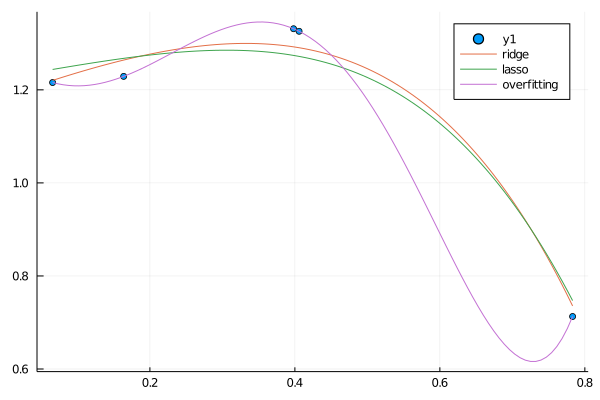

問題設定
$\bm{y} = (y^{(1)}, y^{(2)}, \ldots, y^{(N)})^T,\ \bm{x}_i = (1, x_1^{(i)}, x_2^{(i)}, \ldots, x_D^{(i)})^T$
とおく。$(\bm{x}_i, y_i),\ i = 1, 2, \ldots, N$ がデータとして与えられている。このとき、入力と出力の間に
$$
\begin{aligned}
y
&= h_{\bm{w}}(\bm{x})\\
&:= w_0 + w_1x_1 + w_2x_2 + \cdots + w_Dx_D\\
&= \bm{w}^T\bm{x}
\end{aligned}
$$
が成り立つと仮定し、これに適する$\bm{w}$を見つけたい。
(正則化前の)コスト関数
ここで「適する」とは具体的に何なのかというと、ここでは予測とデータとの二乗誤差の和
$$
J(\bm{w}) = \frac{1}{2} \sum_{i=1}^{N} (h_{\bm{w}}(\bm{x}_i) - y^{(i)})^2
$$
が最小となる $\bm{w}$ を求める。この $J$ をここではコスト関数と呼ぶ。
係数 $1/2$ は微分した時に出てくる $2$ を消し去るための便宜的なものであり、つける必然はない。
L1正則化とL2正則化
コスト関数に $\bm{w}_i$ のL1ノルム(の1乗)の項を付けることをL1正則化という。
$$
J_1(\bm{w}) = J(\bm{w}) + \lambda \|\bm{w}\|_1
$$
ただし、$\lambda$ は適当な定数。
同様に，コスト関数に $\bm{w}_i$ のL2ノルムの2乗の項を付けることをL2正則化という。
$$
J_2(\bm{w}) = J(\bm{w}) + \frac{\lambda}{2} \|\bm{w}\|_2^2
$$
ただし、$\lambda$ は適当な定数。$\lambda$ に $1/2$ をつける理由は微分し易くするためのもの。
一般に，コスト関数に $\bm{w}_i$ のLpノルムのp乗の項を付けることをLp正則化という。
正則化はデータの過学習を防ぐ目的で使われる。
Ridge回帰
$J(\bm{w})$ にL2正則化を施したものは以下の通り。
$$
J_2(\bm{w}) = \frac{1}{2} \sum_{i=1}^{N} (h_{\bm{w}}(\bm{x}_i) - y^{(i)})^2 + \frac{\lambda}{2} \|\bm{w}\|_2^2
$$
勾配
L2正則化の場合は単純に微分できる。まず $w_j$ で微分すると、$\| \bm{w} \|_2^2 = \sum_{j=1}^{D}w_j^2$ であることに注意して、
$$
\frac{\partial J_2}{\partial w_j}
= \sum_{i=1}^{N} (h_{\bm{w}}(\bm{x}i) - y^{(i)})x{ij} + \lambda w_j
$$
となる。 これより勾配が計算できる。
$J$ の部分のベクトル表現については、線形回帰の勾配法のときの計算と同様にして、
$$
\frac{\partial J_2}{\partial \bm{w}} = X^T(X\bm{w} - \bm{y}) + \lambda \bm{w}
$$
ただし、
$$
X = \begin{pmatrix}
x_{10} & x_{11} & \cdots & x_{1D}\\
x_{20} & x_{21} & \cdots & x_{2D}\\
\vdots & \vdots & \ddots & \vdots\\
x_{N0} & x_{N1} & \cdots & x_{ND}
\end{pmatrix}
$$
Lasso回帰
L1正則化
$J(\bm{w})$ にL2正則化を施したものを改めて $J(\bm{w})$ とおく。
$$
J_1(\bm{w}) = \frac{1}{2} \sum_{i=1}^{N} (h_{\bm{w}}(\bm{x}_i) - y^{(i)})^2 + \lambda \|\bm{w}\|_1
$$
勾配
$w_j$ で微分すると、$\| \bm{w} \|_1 = \sum_{j=1}^{D} |w_j|$ であることに注意して、
$$
\frac{\partial J_1}{\partial w_j}
= \sum_{i=1}^{N} (h_{\bm{w}}(\bm{x}i) - y^{(i)})x{ij} + \lambda \frac{\partial |w_j|}{\partial w_j}
$$
さて、最後の項が計算できないため、通常の勾配降下法が利用できない。いくつか方法があるらしいが、ここでは座標降下法で解くことを目指す。その準備として、「1変数のみ動かしたときの$J$の最小値」を求めることにする。
1変数以外は固定した場合の最小値
$J_1(\bm{w})$ について、 $w_d$ だけを動かすことを考え、$J_1$ が最小になる $w_d$ を求める。 “$J_1$ の $w_d$ に関する勾配 = 0” を解くことを目指す。
見やすさのため、以下の記号を定義する。
- $\bm{w}_{-d}$ : ベクトル $\bm{w}$ から第 $d$ 成分を取り除いたベクトル。
- $\bm{x}_{n, -d}$ : ベクトル $\bm{x}_n$ から第 $d$ 成分を取り除いたベクトル。
- $\bm{x}_{:, d} = (x_{1d}, x_{2d}, \ldots, x_{Nd})^T$: 行列 $X$ の第 $d$ 列を取り出したベクトル。
- $X_{:, -d}$ : 行列 $X$ から第 $d$ 列を取り除いた行列。
- $\bm{r}_{-d} = \bm{y} - X_{:, -d}\bm{w}_{-d}$ : データの $d$ 番目の特徴を考慮しない場合の誤差
$$
\begin{aligned}
\frac{\partial J_1}{\partial w_d}
&= \sum_{n=1}^{N} (\bm{w}^T\bm{x}n - y^{(n)})x{nd} + \lambda \frac{\partial |w_d|}{\partial w_d}\\
&= \sum_{n=1}^{N} (\bm{w}{-d}^T\bm{x}{n,-d} + w_dx_{nd} - y^{(n)})x_{nd} + \lambda \frac{\partial |w_d|}{\partial w_d}\\
&= \sum_{n=1}^{N} (\bm{w}{-d}^T\bm{x}{n,-d} - y^{(n)})x_{nd} + w_d\sum_{n=1}^{N} x_{nd}^2 + \lambda \frac{\partial |w_d|}{\partial w_d}\\
&= -x_{:, d}^T \bm{r}_{-d} + w_d\| \bm{x}_{:, d} ||_2^2 + \lambda \frac{\partial |w_d|}{\partial w_d}\\
&= -c_d + w_da_d + \lambda \frac{\partial |w_d|}{\partial w_d}
\end{aligned}
$$
ここで、再び見やすさのため、$c_d = x_{:, d}^T \bm{r}_{-d},\ a_d = \| \bm{x}_{:, d} ||_2^2$とおいた。
さて、“勾配 = 0” を解いて局所最小値を求めたいが、最後の項が $w_d = 0$ で微分不可能。
そこで、劣勾配の概念を利用する。$|w_d|$ の劣勾配は以下の通り。
$$
\frac{\partial |w_d|}{\partial w_d} =
\begin{cases}
{ -1 } & (w_d < 0)\\
[ -1, 1] & (w_d = 0)\\
{ 1 } & (w_d > 0)
\end{cases}
$$
$J_1$ の劣勾配は、勾配と区別せず $\frac{\partial J_1}{\partial w_d}$ と書くことにする。。$w_d = 0$ のときは $w_da_d = 0$ になることに注意すると、
劣勾配は以下のようになる。
$$
\frac{\partial J_1}{\partial w_d} =
\begin{cases}
\{ -c_d + w_da_d - \lambda \} & (w_d < 0)\\
[ -c_d-\lambda, -c_d + \lambda ] & (w_d = 0)\\
\{ -c_d + w_da_d + \lambda \} & (w_d > 0)\\
\end{cases}
$$
“勾配 = 0” を解く代わりに “0 $\in$ 劣勾配” を満たす $\bm{w}$ を求める。やや天下り的ではあるが、$c_d$ の値で場合分けする。
- $c_d < -\lambda$ のとき、$\hat{\bm{w}} = \frac{c_d + \lambda}{a_d}$ とおけば、$\hat{\bm{w}} < 0$。
よって、上式の1行目に代入できて、$\frac{\partial J_1}{\partial w_d} = \{ 0 \}$。
- $c_d > \lambda$ のとき、$\hat{\bm{w}} = \frac{c_d - \lambda}{a_d}$ とおけば、$\hat{\bm{w}} > 0$。
よって、上式の3行目に代入できて、$\frac{\partial J_1}{\partial w_d} = \{ 0 \}$。
- $-\lambda \le c_d \le \lambda$ のとき、$-c_d-\lambda \le 0 \le -c_d+\lambda$ すなわち $0 \in [-c_d-\lambda, -c_d+\lambda]$。
そこで、$\hat{\bm{w}} = 0$ とすれば、上式の2行目より $0 \in \frac{\partial J_1}{\partial w_d}$。
まとめると、“0 $\in$ 劣勾配” を満たす $\bm{w}$ は以下のようになる。
$$
\hat{\bm{w}} =
\begin{cases}
\frac{c_d + \lambda}{a_d} & (c_d < -\lambda)\\
0 & (-\lambda \le c_d \le \lambda)\\
\frac{c_d - \lambda}{a_d} & (c_d > \lambda)\\
\end{cases}
$$
一般に、ソフト閾値作用素 (soft thresholding operator)というものがある。それは以下のように定義される。
$$
S(\theta, \lambda) =
\begin{cases}
\theta + \lambda & (\theta < -\lambda)\\
0 & (-\lambda \le \theta \le \lambda)\\
\theta - \lambda & (\theta > \lambda)\\
\end{cases}
$$
これを用いて、$\hat{\bm{w}} = S(\frac{c_d}{a_d}, \frac{\lambda}{a_d})$ と書ける。
座標降下法
各ステップで以下の手順を行う。
- $d = 1, 2, \ldots, D$ について、$\bm{w} \leftarrow \argmin_{w_d} J_1(\bm{w})$
つまり、色々な $d$ で、$w_d$ についての最小化問題を解くことを繰り返す。
$\argmin_{w_d} J_1(\bm{w})$ は「$w_d$ だけ動かした場合に、$J_1$ が最小となる $w_d$」のことである。これは前に求めた $\hat{\bm{w}}$ のことであったから、
手順は、
$d = 1, 2, \ldots, D$ について、
- $a_d = \| \bm{x}_{:, d} \|_2^2$ を計算。
- $c_d = x_{:, d}^T \bm{r}_{-d}$ を計算。
- $\bm{w} \leftarrow S(\frac{c_d}{a_d}, \frac{\lambda}{a_d})$。
と読み替えられる。
Juliaによる実装
雛形を用意．
using Plots
using Random, Distributions
using LinearAlgebra
gr()
function main()
Random.seed!(2021)
# ここに色々書く
end
main()
データの生成
以下のモデルを満たすデータ$(x, y)$を生成する。
$$
y = w_0 + w_1x + \cdots + w_dx^d + \varepsilon
$$
ただし，$\varepsilon \sim \mathcal{N}(0, \sigma^2)$．
function generate_data(w, N; sigma=0.05)
dist = Normal(0, sigma)
x = rand(N)
f(x) = evalpoly(x, w)
y = f.(x) + rand(dist, N)
x, y
end
Ridge回帰
以下の勾配を使った勾配降下法を適用すればよい。
$$
\frac{\partial J_2}{\partial \bm{w}} = X^T(X\bm{w} - \bm{y}) + \lambda \bm{w}
$$
勾配はJuliaだと以下のように書ける。
function fit_by_ridge(X, y, w0; alpha=0.01, lambda=0.01, max_iter=10000)
ws = [w0]
w = w0
for i in 1:max_iter
dw = X'*(X*w - y) + lambda*w
w = w - alpha * dw
push!(ws, w)
end
hcat(ws...)'
end
Lasso回帰
座標降下法による手順を再掲する。
$d = 1, 2, \ldots, D$ について、
- $a_d = \| \bm{x}_{:, d} \|_2^2$ を計算。
- $c_d = x_{:, d}^T \bm{r}_{-d}$ を計算。
- $\bm{w} \leftarrow S(\frac{c_d}{a_d}, \frac{\lambda}{a_d})$。
$a_d$ については、単純にX[:, d]のノルムを計算すれば良い。$c_d$については、
$$
\begin{aligned}
x_{:, d}^T\bm{r}{-d}
&= \sum{n=1}^{N} x_{nd}(y^{(n)} - \bm{w}{-d}^T\bm{x}{n,-d})\\
&= \sum_{n=1}^{N} x_{nd}(y^{(n)} - \bm{w}^T\bm{x}n + w_dx{nd})\\
&= \sum_{n=1}^{N} x_{nd}(y^{(n)} - \bm{w}^T\bm{x}n) + w_d\sum{n=1}^Nx_{nd}^2\\
&= x_{:, d}^T(\bm{y} - X\bm{w}) + w_da_d
\end{aligned}
$$
と式変形すれば、
X[:, d]'*(y - X * w) + w[d] * a
と計算できる。
ソフト閾値作用素 $S$ は次のように定義できる．
function soft_thresholding(theta, lambda)
if theta < -lambda
theta + lambda
elseif theta > lambda
theta - lambda
else
0
end
end
これを用いてLasso回帰のアルゴリズムを定義．
function fit_by_lasso(X, y, w0; alpha=0.01, lambda=0.01, max_iter=300)
D = length(w0)
ws = [w0]
w = w0
for _ in 1:max_iter
for d in 1:D
a_d = X[:, d]' * X[:, d]
c_d = X[:, d]' * (y - X * w) + w[d] * a_d
w[d] = soft_thresholding(c_d/a_d, lambda/a_d)
push!(ws, copy(w))
end
end
hcat(ws...)'
end
グラフのプロット
予測関数を描画する関数を定義．
function plot_w!(p, w, x, label)
d = length(w) - 1
plot_x = range(extrema(x)..., length=100)
plot!(p, plot_x, x -> w' * poly_vec(x, d), label=label)
end
main関数
まずはRidge回帰、Lasso回帰の結果をグラフで図示してみる．
ついでに普通の最小二乗法で解いた$w$もプロットしてみる．
function poly_vec(x, d)
[x^i for i in 0:d]
end
function main()
Random.seed!(2021)
p = plot()
x, y = generate_data([1.0,2.0,-3.0], 5)
d = 5
X = hcat(poly_vec.(x, d)...)'
ws_ridge = fit_by_ridge(X, y, rand(d+1))
display(ws_ridge[end, :])
ws_lasso = fit_by_lasso(X, y, rand(d+1))
display(ws_lasso[end, :])
w_overfitting = (X' * X) \ (X' * y)
p = plot()
scatter!(p, x, y)
plot_w!(p, ws_ridge[end, :], x, "ridge")
plot_w!(p, ws_lasso[end, :], x, "lasso")
plot_w!(p, w_overfitting, x, "overfitting")
end
最小二乗法の方は過学習を起こしているが、
Ridge回帰とLasso回帰は自然な曲線を描いていることが読み取れる。

$w$の値を見る。前者がRidge回帰、後者がLasso回帰。
6-element Vector{Float64}:
1.185633350868915
0.5514935176341534
-0.3138792668283392
-0.7019412321018753
-0.5448897044829057
-0.5005843434957847
6-element Vector{Float64}:
1.2261293729701306
0.27148775417222326
0.0
-0.45102159950359655
-1.2632744627838859
0.0
Lassoで特徴的なのは、一部のパラメータが完全に0になっている点。
0になったパラメータは、今回のモデルにとって必要のないパラメータであった、と解釈できる。
このように、Lasso回帰ではモデルにとって必要のないパラメータを見つけることができる。
ただし、「どの程度必要ないのか」は $\lambda$ の値によることに注意。$\lambda$ を大きくすればするほどパラメータが0になりやすくなる。
Lasso回帰ではいくつかのパラメータを捨てることになるが、すべてのパラメータを考慮したい場合にはRidge回帰を利用すれば良いのだと思う。